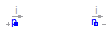

This package contains all function, parameters and data of semiconductor models, that are transformed from SPICE3 into Modelica. The models of the package semiconductors access to repository models. This package should not be used via direct access by a user of the Spice-Library for Modelica. It is restricted to the development.
Extends from Modelica.Icons.Package (Icon for standard packages).
| Name | Description |
|---|---|
| MOS | Metal-Oxide Semiconductor Field-Effect Transistor |
| Record with technological parameters (.model) | |
| Metal-Oxide Semiconductor Field-Effect Transistor | |
| Record with technological parameters (.model) | |
| BJT | Bipolar junction transistor |
| Record with technological parameters (.model) | |
| Diode model | |
| Record with technological parameters (.model) | |
| Semiconductor resistor | |
| Record with technological parameters (.model) | |
| General constants of SPICE simulator | |
| Equations for semiconductor calculation | |
| Basic records and functions | |
| Device Temperature | |
| Functions and records for Mosfets | |
| Records and functions for Mosfets level 1,2,3,6 | |
| Records and functions for Mosfets level 1 | |
| Records and functions for Mosfets level 2 | |
| Records and functions for diode model | |
| Records and functions for semiconductor resistor model | |
| Records and functions for bjt model |
 Modelica.Electrical.Spice3.Internal.MOS
Modelica.Electrical.Spice3.Internal.MOS

MOSFET model, both N and P channel, LEVEL 1: Shichman-Hodges
The package Repository is not for user access. There all function, records and data are stored, that are needed for the semiconductor models of the package Semiconductors.
| Type | Name | Default | Description |
|---|---|---|---|
| Integer | mtype | MOSFET type: 0 - N channel, 1 - P channel | |
| Length | L | 1e-4 | Length [m] |
| Length | W | 1e-4 | Width [m] |
| Area | AD | 0 | Area of the drain diffusion [m2] |
| Area | AS | 0 | Area of the source diffusion [m2] |
| Length | PD | 0 | Perimeter of the drain junction [m] |
| Length | PS | 0 | Perimeter of the source junction [m] |
| Real | NRD | 1 | Number of squares of the drain diffusions |
| Real | NRS | 1 | Number of squares of the source diffusions |
| Integer | OFF | 0 | Optional initial condition: 0 - IC not used, 1 - IC used, not implemented yet |
| Voltage | IC | Initial condition values, not implemented yet [V] | |
| Temp_C | TEMP | 27 | Operating temperature of the device [degC] |
| ModelcardMOS | modelcard | MOSFET modelcard |
| Type | Name | Description |
|---|---|---|
| PositivePin | G | gate node |
| PositivePin | D | drain node |
| NegativePin | S | source node |
| PositivePin | B | bulk node |
model MOS "Metal-Oxide Semiconductor Field-Effect Transistor"Modelica.Electrical.Analog.Interfaces.PositivePin G "gate node"; Modelica.Electrical.Analog.Interfaces.PositivePin D "drain node"; Modelica.Electrical.Analog.Interfaces.NegativePin S "source node"; Modelica.Electrical.Analog.Interfaces.PositivePin B "bulk node"; parameter Integer mtype(start = 0) "MOSFET type: 0 - N channel, 1 - P channel"; parameter SI.Length L = 1e-4 "Length"; parameter SI.Length W = 1e-4 "Width"; parameter SI.Area AD = 0 "Area of the drain diffusion"; parameter SI.Area AS = 0 "Area of the source diffusion"; parameter SI.Length PD = 0 "Perimeter of the drain junction"; parameter SI.Length PS = 0 "Perimeter of the source junction"; parameter Real NRD = 1 "Number of squares of the drain diffusions"; parameter Real NRS = 1 "Number of squares of the source diffusions"; parameter Integer OFF = 0 "Optional initial condition: 0 - IC not used, 1 - IC used, not implemented yet"; parameter SI.Voltage IC( start = -1e40) "Initial condition values, not implemented yet"; parameter SI.Temp_C TEMP = 27 "Operating temperature of the device"; parameter ModelcardMOS modelcard "MOSFET modelcard"; SpiceConstants C "General constants of SPICE simulator"; final parameter Mos1.Mos1ModelLineParams p = Mos1.mos1RenameParameters(modelcard, C) "Model line parameters"; final parameter Mosfet.Mosfet m = Mos1.mos1RenameParametersDev( modelcard, mtype, W, L, AS, AS, PD, PS, NRD, NRS, OFF, IC, TEMP) "Renamed parameters"; final parameter Integer m_type = if (m.m_bPMOS > 0.5) then -1 else 1 "Type of the transistor"; final parameter Mos.MosModelLineVariables vp = Mos1.mos1ModelLineParamsInitEquations( p, C, m_type) "Model line variables"; final parameter Mos1.Mos1Calc c1 = Mos.mosCalcInitEquations( p, C, vp, m) "Precalculated parameters"; final parameter Mos1.Mos1Calc c2 = Mos.mosCalcCalcTempDependencies( p, C, vp, m, c1, m_type) "Precalculated parameters"; Mos.CurrrentsCapacitances cc; constant Boolean m_bInit = false; Real Dinternal; //internal drain node Real Sinternal; //internal source node Real ird; Real irs; Real ibdgmin; Real ibsgmin; Real icBD; Real icBS; Real icGB; Real icGS; Real icGD; SI.Voltage vDS "Drain - source voltage"; SI.Voltage vGS "Gate - source voltage"; equation assert( NRD <> 0, "NRD, length of drain in squares, must not be zero"); assert( NRS <> 0, "NRS, length of source in squares, must not be zero"); vDS = D.v - S.v; vGS = G.v - S.v; cc = Mos.mosCalcNoBypassCode( m, m_type, c2, p, C, vp, m_bInit, {G.v, B.v, Dinternal, Sinternal}); // drain- and sourceresistances // ---------------------------- ird * c1.m_drainResistance = (D.v - Dinternal); irs * p.m_sourceResistance = (S.v - Sinternal); // capacitances // ------------ icBD = cc.cBD * (der(B.v) - der(Dinternal)); icBS = cc.cBS * (der(B.v) - der(Sinternal)); icGB = cc.cGB * (der(G.v) - der(B.v)); icGD = cc.cGD * (der(G.v) - der(Dinternal)); icGS = cc.cGS * (der(G.v) - der(Sinternal)); // currents // -------- ibsgmin = SpiceConstants.CKTgmin * (B.v - Sinternal); ibdgmin = SpiceConstants.CKTgmin * (B.v - Dinternal); G.i = icGB + icGD + icGS; B.i = cc.iBD + cc.iBS + ibdgmin + ibsgmin - icGB + icBD + icBS; D.i = ird; S.i = irs; //currentsum at inner node //------------------------ 0 = -ird + cc.idrain - cc.iBD - ibdgmin - icGD - icBD; 0 = -irs - cc.idrain - cc.iBS - ibsgmin - icGS - icBS;end MOS;
Modelcard parameters for MOSFET model, both N and P channel, LEVEL 1: Shichman-Hodges
The package Repository is not for user access. There all function, records and data are stored, that are needed for the semiconductor models of the package Semiconductors.
| Type | Name | Default | Description |
|---|---|---|---|
| Voltage | VTO | -1e40 | Zero-bias threshold voltage, default 0 [V] |
| Transconductance | KP | -1e40 | Transconductance parameter, default 2e-5 [A/V2] |
| Real | GAMMA | -1e40 | Bulk threshold parameter, default 0 |
| Voltage | PHI | -1e40 | Surface potential, default 0.6 [V] |
| InversePotential | LAMBDA | 0 | Channel-length modulation, default 0 [1/V] |
| Resistance | RD | -1e40 | Drain ohmic resistance, default 0 [Ohm] |
| Resistance | RS | -1e40 | Source ohmic resistance, default 0 [Ohm] |
| Capacitance | CBD | -1e40 | Zero-bias B-D junction capacitance, default 0 [F] |
| Capacitance | CBS | -1e40 | Zero-bias B-S junction capacitance, default 0 [F] |
| Current | IS | 1.e-14 | Bulk junction saturation current [A] |
| Voltage | PB | 0.8 | Bulk junction potential [V] |
| Permittivity | CGSO | 0.0 | Gate-source overlap capacitance per meter channel width [F/m] |
| Permittivity | CGDO | 0.0 | Gate-drain overlap capacitance per meter channel width [F/m] |
| Permittivity | CGBO | 0.0 | Gate-bulk overlap capacitance per meter channel width [F/m] |
| Resistance | RSH | 0.0 | Drain and source diffusion sheet resistance [Ohm] |
| CapacitancePerArea | CJ | 0.0 | Zero-bias bulk junction bottom cap. per sq-meter of junction area [F/m2] |
| Real | MJ | 0.5 | Bulk junction bottom grading coefficient |
| Permittivity | CJSW | 0.0 | Zero-bias junction sidewall cap. per meter of junction perimeter [F/m] |
| Real | MJSW | 0.5 | Bulk junction sidewall grading coefficient |
| CurrentDensity | JS | 0.0 | Bulk junction saturation current per sq-meter of junction area [A/m2] |
| Length | TOX | -1e40 | Oxide thickness, default 1e-7 [m] |
| Real | NSUB | -1e40 | Substrate doping, default 0 |
| PerArea_cm | NSS | 0.0 | Surface state density [1/cm2] |
| Real | TPG | 1.0 | Type of gate material: +1 opp. to substrate, -1 same as substrate, 0 Al gate |
| Length | LD | 0.0 | Lateral diffusion [m] |
| Area_cmPerVoltageSecond | UO | 600 | Surface mobility [cm2/(V.s)] |
| Real | KF | 0 | Flicker noise coefficient |
| Real | AF | 1.0 | Flicker noise exponent |
| Real | FC | 0.5 | Coefficient for forward-bias depletion capacitance formula |
| Temp_C | TNOM | -1e40 | Parameter measurement temperature, default 27 [degC] |
record ModelcardMOS "Record with technological parameters (.model)"
parameter SI.Voltage VTO=-1e40 "Zero-bias threshold voltage, default 0";
parameter SI.Transconductance KP=-1e40
"Transconductance parameter, default 2e-5";
parameter Real GAMMA=-1e40 "Bulk threshold parameter, default 0";
parameter SI.Voltage PHI=-1e40 "Surface potential, default 0.6";
parameter SI.InversePotential LAMBDA=0 "Channel-length modulation, default 0";
parameter SI.Resistance RD=-1e40 "Drain ohmic resistance, default 0";
parameter SI.Resistance RS=-1e40 "Source ohmic resistance, default 0";
parameter SI.Capacitance CBD=-1e40
"Zero-bias B-D junction capacitance, default 0";
parameter SI.Capacitance CBS=-1e40
"Zero-bias B-S junction capacitance, default 0";
parameter SI.Current IS=1.e-14 "Bulk junction saturation current";
parameter SI.Voltage PB=0.8 "Bulk junction potential";
parameter SI.Permittivity CGSO=0.0
"Gate-source overlap capacitance per meter channel width";
parameter SI.Permittivity CGDO=0.0
"Gate-drain overlap capacitance per meter channel width";
parameter SI.Permittivity CGBO=0.0
"Gate-bulk overlap capacitance per meter channel width";
parameter SI.Resistance RSH=0.0 "Drain and source diffusion sheet resistance";
parameter SI.CapacitancePerArea CJ=0.0
"Zero-bias bulk junction bottom cap. per sq-meter of junction area";
parameter Real MJ=0.5 "Bulk junction bottom grading coefficient";
parameter SI.Permittivity CJSW=0.0
"Zero-bias junction sidewall cap. per meter of junction perimeter";
parameter Real MJSW=0.5 "Bulk junction sidewall grading coefficient";
parameter SI.CurrentDensity JS=0.0
"Bulk junction saturation current per sq-meter of junction area";
parameter SI.Length TOX=-1e40 "Oxide thickness, default 1e-7";
parameter Real NSUB=-1e40 "Substrate doping, default 0";
parameter SI.Conversions.NonSIunits.PerArea_cm NSS=0.0
"Surface state density";
parameter Real TPG=1.0
"Type of gate material: +1 opp. to substrate, -1 same as substrate, 0 Al gate";
parameter SI.Length LD=0.0 "Lateral diffusion";
parameter SI.Conversions.NonSIunits.Area_cmPerVoltageSecond UO=600
"Surface mobility";
parameter Real KF=0 "Flicker noise coefficient";
parameter Real AF=1.0 "Flicker noise exponent";
parameter Real FC=0.5
"Coefficient for forward-bias depletion capacitance formula";
parameter SI.Temp_C TNOM=-1e40
"Parameter measurement temperature, default 27";
constant Integer LEVEL=1 "Model level: Shichman-Hodges";
equation
end ModelcardMOS;
 Modelica.Electrical.Spice3.Internal.MOS2
Modelica.Electrical.Spice3.Internal.MOS2
MOSFET model, both N and P channel, LEVEL 2
The package Repository is not for user access. There all function, records and data are stored, that are needed for the semiconductor models of the package Semiconductors.
| Type | Name | Default | Description |
|---|---|---|---|
| Integer | mtype | MOSFET type: 0 - N channel, 1 - P channel | |
| Length | L | 1e-4 | Length [m] |
| Length | W | 1e-4 | Width [m] |
| Area | AD | 0 | Area of the drain diffusion [m2] |
| Area | AS | 0 | Area of the source diffusion [m2] |
| Length | PD | 0 | Perimeter of the drain junction [m] |
| Length | PS | 0 | Perimeter of the source junction [m] |
| Real | NRD | 1 | Number of squares of the drain diffusions |
| Real | NRS | 1 | Number of squares of the source diffusions |
| Integer | OFF | 0 | Optional initial condition: 0 - IC not used, 1 - IC used, not implemented yet |
| Voltage | IC | Initial condition values, not implemented yet [V] | |
| Real | TEMP | 27 | Operating temperature of the device |
| ModelcardMOS2 | modelcard | MOSFET modelcard | |
| SpiceConstants | C | General constants of SPICE simulator |
| Type | Name | Description |
|---|---|---|
| PositivePin | G | gate node |
| PositivePin | D | drain node |
| NegativePin | S | source node |
| PositivePin | B | bulk node |
model MOS2 "Metal-Oxide Semiconductor Field-Effect Transistor"Modelica.Electrical.Analog.Interfaces.PositivePin G "gate node"; Modelica.Electrical.Analog.Interfaces.PositivePin D "drain node"; Modelica.Electrical.Analog.Interfaces.NegativePin S "source node"; Modelica.Electrical.Analog.Interfaces.PositivePin B "bulk node"; parameter Integer mtype(start = 0) "MOSFET type: 0 - N channel, 1 - P channel"; parameter SI.Length L = 1e-4 "Length"; parameter SI.Length W = 1e-4 "Width"; parameter SI.Area AD = 0 "Area of the drain diffusion"; parameter SI.Area AS = 0 "Area of the source diffusion"; parameter SI.Length PD = 0 "Perimeter of the drain junction"; parameter SI.Length PS = 0 "Perimeter of the source junction"; parameter Real NRD = 1 "Number of squares of the drain diffusions"; parameter Real NRS = 1 "Number of squares of the source diffusions"; parameter Integer OFF = 0 "Optional initial condition: 0 - IC not used, 1 - IC used, not implemented yet"; parameter SI.Voltage IC( start = -1e40) "Initial condition values, not implemented yet"; parameter Real TEMP = 27 "Operating temperature of the device"; Real MOScapgd = qm.qm_capgd; Real MOScapgs = qm.qm_capgs; Real MOScapgb = qm.qm_capgb; parameter ModelcardMOS2 modelcard "MOSFET modelcard"; constant SpiceConstants C "General constants of SPICE simulator"; final parameter Mos2.Mos2ModelLineParams p=Mos2.mos2RenameParameters( modelcard, C) "Model line parameters"; final parameter Mosfet.Mosfet m=Mos2.mos2RenameParametersDev( modelcard, mtype, W, L, AD, AS, PD, PS, NRD, NRS, OFF, IC, TEMP) "Renamed parameters"; final parameter Integer m_type = if (m.m_bPMOS > 0.5) then -1 else 1 "Type of the transistor"; final parameter Mos2.Mos2ModelLineVariables vp= Mos2.mos2ModelLineParamsInitEquations( p, C, m_type) "Model line variables"; final parameter Mos2.Mos2Calc c1=Mos.mos2CalcInitEquations( p, C, vp, m) "Precalculated parameters"; final parameter Mos2.Mos2Calc c2=Mos.mos2CalcCalcTempDependencies( p, C, vp, m, c1, m_type) "Precalculated parameters"; Mos.DEVqmeyer qm; Mos.CurrrentsCapacitances cc; constant Boolean m_bInit = false; Real Dinternal; Real Sinternal; Real ird; Real irs; Real ibdgmin; Real ibsgmin; Real icBD; Real icBS; Real icGB; Real icGS; Real icGD; Real icqmGB; Real icqmGS; Real icqmGD; SI.Voltage vDS "Drain - source voltage"; SI.Voltage vGS "Gate - source voltage"; equation assert( NRD <> 0, "NRD, length of drain in squares, must not be zero"); assert( NRS <> 0, "NRS, length of source in squares, must not be zero"); vDS = D.v - S.v; vGS = G.v - S.v; (cc,qm) = Mos.mos2CalcNoBypassCode( m, m_type, c2, p, C, vp, m_bInit, {G.v,B.v,Dinternal,Sinternal}); // drain- and sourceresistances // ---------------------------- ird * c1.m_drainResistance = (D.v - Dinternal); irs * p.m_sourceResistance = (S.v - Sinternal); // capacitances // ------------ icBD = cc.cBD * (der(B.v) - der(Dinternal)); icBS = cc.cBS * (der(B.v) - der(Sinternal)); icGB = cc.cGB * (der(G.v) - der(B.v)); icGD = cc.cGD * (der(G.v) - der(Dinternal)); icGS = cc.cGS * (der(G.v) - der(Sinternal)); icqmGB = qm.qm_capgb*(der(G.v) - der(B.v)); icqmGS = qm.qm_capgs*(der(G.v) - der(Sinternal)); icqmGD = qm.qm_capgd*(der(G.v) - der(Dinternal)); // currents // -------- ibsgmin = SpiceConstants.CKTgmin*(B.v - Sinternal); ibdgmin = SpiceConstants.CKTgmin*(B.v - Dinternal); G.i = icGB + icGD + icGS + icqmGB + icqmGD + icqmGS; B.i = cc.iBD + cc.iBS+ ibdgmin + ibsgmin -icGB + icBD + icBS - icqmGB; D.i = ird; S.i = irs; //currentsum at inner node //------------------------ 0 = -ird + cc.idrain - cc.iBD - ibdgmin - icGD - icBD - icqmGD; 0 = -irs - cc.idrain - cc.iBS - ibsgmin - icGS - icBS - icqmGS;end MOS2;
Modelcard parameters for MOSFET model, both N and P channel, LEVEL 2
The package Repository is not for user access. There all function, records and data are stored, that are needed for the semiconductor models of the package Semiconductors.
Extends from ModelcardMOS (Record with technological parameters (.model)).
| Type | Name | Default | Description |
|---|---|---|---|
| Voltage | VTO | -1e40 | Zero-bias threshold voltage, default 0 [V] |
| Transconductance | KP | -1e40 | Transconductance parameter, default 2e-5 [A/V2] |
| Real | GAMMA | -1e40 | Bulk threshold parameter, default 0 |
| Voltage | PHI | -1e40 | Surface potential, default 0.6 [V] |
| InversePotential | LAMBDA | 0 | Channel-length modulation, default 0 [1/V] |
| Resistance | RD | -1e40 | Drain ohmic resistance, default 0 [Ohm] |
| Resistance | RS | -1e40 | Source ohmic resistance, default 0 [Ohm] |
| Capacitance | CBD | -1e40 | Zero-bias B-D junction capacitance, default 0 [F] |
| Capacitance | CBS | -1e40 | Zero-bias B-S junction capacitance, default 0 [F] |
| Current | IS | 1.e-14 | Bulk junction saturation current [A] |
| Voltage | PB | 0.8 | Bulk junction potential [V] |
| Permittivity | CGSO | 0.0 | Gate-source overlap capacitance per meter channel width [F/m] |
| Permittivity | CGDO | 0.0 | Gate-drain overlap capacitance per meter channel width [F/m] |
| Permittivity | CGBO | 0.0 | Gate-bulk overlap capacitance per meter channel width [F/m] |
| Resistance | RSH | 0.0 | Drain and source diffusion sheet resistance [Ohm] |
| CapacitancePerArea | CJ | 0.0 | Zero-bias bulk junction bottom cap. per sq-meter of junction area [F/m2] |
| Real | MJ | 0.5 | Bulk junction bottom grading coefficient |
| Permittivity | CJSW | 0.0 | Zero-bias junction sidewall cap. per meter of junction perimeter [F/m] |
| Real | MJSW | 0.33 | Bulk junction sidewall grading coefficient |
| CurrentDensity | JS | 0.0 | Bulk junction saturation current per sq-meter of junction area [A/m2] |
| Length | TOX | -1e40 | Oxide thickness, default 1e-7 [m] |
| Real | NSUB | -1e40 | Substrate doping, default 0 |
| PerArea_cm | NSS | 0.0 | Surface state density [1/cm2] |
| Real | TPG | 1.0 | Type of gate material: +1 opp. to substrate, -1 same as substrate, 0 Al gate |
| Length | LD | 0.0 | Lateral diffusion [m] |
| Area_cmPerVoltageSecond | UO | 600 | Surface mobility [cm2/(V.s)] |
| Real | KF | 0 | Flicker noise coefficient |
| Real | AF | 1.0 | Flicker noise exponent |
| Real | FC | 0.5 | Coefficient for forward-bias depletion capacitance formula |
| Temp_C | TNOM | -1e40 | Parameter measurement temperature, default 27 [degC] |
| Real | NFS | 0.0 | Fast surface state density |
| Real | XJ | 0.0 | Metallurgiecal junction depth |
| Real | UCRIT | 1.e4 | Critical field for mobility degradation (MOS2 only) |
| Real | UEXP | 0.0 | Critical field exponent in mobility degradation (MOS2 only) |
| Real | VMAX | 0.0 | Maximum drift velocity of carries |
| Real | NEFF | 1.0 | Total channel charge (fixed and mobile) coefficient (MOS2 only) |
| Real | DELTA | 0.0 | Width effect on theshold voltage |
record ModelcardMOS2 "Record with technological parameters (.model)"
extends ModelcardMOS(MJSW=0.33);
parameter Real NFS=0.0 "Fast surface state density";
parameter Real XJ=0.0 "Metallurgiecal junction depth";
parameter Real UCRIT=1.e4
"Critical field for mobility degradation (MOS2 only)";
parameter Real UEXP=0.0
"Critical field exponent in mobility degradation (MOS2 only)";
parameter Real VMAX=0.0 "Maximum drift velocity of carries";
parameter Real NEFF=1.0
"Total channel charge (fixed and mobile) coefficient (MOS2 only)";
parameter Real DELTA=0.0 "Width effect on theshold voltage";
end ModelcardMOS2;

Bibpolar junction transistor model
The package Repository is not for user access. There all function, records and data are stored, that are needed for the semiconductor models of the package Semiconductors.
| Type | Name | Default | Description |
|---|---|---|---|
| Real | TBJT | Type of transistor (NPN=1, PNP=-1) | |
| Real | AREA | 1.0 | Area factor |
| Boolean | OFF | false | Optional initial condition: false - IC not used, true - IC used, not implemented yet |
| Voltage | IC_VCE | Initial condition value (VBE, not implemented yet [V] | |
| Voltage | IC_VBE | Initial condition value (VBC, not implemented yet [V] | |
| Temp_C | TEMP | 27 | Operating temperature of the device [degC] |
| Boolean | SENS_AREA | false | Flag to request sensitivity WRT area, not implemented yet |
| ModelcardBJT | modelcard | BJT modelcard | |
| SpiceConstants | Con | General constants of SPICE simulator |
| Type | Name | Description |
|---|---|---|
| PositivePin | B | Base node |
| PositivePin | C | Collector node |
| NegativePin | E | Emitter node |
model BJT "Bipolar junction transistor"Modelica.Electrical.Analog.Interfaces.PositivePin B "Base node"; Modelica.Electrical.Analog.Interfaces.PositivePin C "Collector node"; Modelica.Electrical.Analog.Interfaces.NegativePin E "Emitter node"; parameter Real TBJT( start = 1) "Type of transistor (NPN=1, PNP=-1)"; parameter Real AREA = 1.0 "Area factor"; parameter Boolean OFF = false "Optional initial condition: false - IC not used, true - IC used, not implemented yet"; parameter SI.Voltage IC_VCE( start = -1e40) "Initial condition value (VBE, not implemented yet"; parameter SI.Voltage IC_VBE( start = -1e40) "Initial condition value (VBC, not implemented yet"; parameter SI.Temp_C TEMP = 27 "Operating temperature of the device"; parameter Boolean SENS_AREA = false "Flag to request sensitivity WRT area, not implemented yet"; parameter ModelcardBJT modelcard "BJT modelcard"; final parameter Bjt3.BjtModelLineParams p=Bjt3.bjtRenameParameters(modelcard, Con) "Model line parameters"; constant SpiceConstants Con "General constants of SPICE simulator"; final parameter Bjt3.Bjt p1=Bjt3.bjtRenameParametersDev( AREA, OFF, IC_VBE, IC_VCE, SENS_AREA) "Renamed parameters"; final parameter Model.Model m=Bjt3.bjtRenameParametersDevTemp(TEMP) "Renamed parameters"; final parameter Bjt3.BjtModelLineParams p2=Bjt3.bjtRenameParametersType(TBJT); final parameter Bjt3.BjtModelLineVariables vl= Bjt3.bjtModelLineInitEquations(p) "Model line variables"; final parameter Bjt3.Bjt3Calc c=Bjt3.bjt3CalcTempDependencies( p1, p, m, vl) "Precalculated parameters"; final parameter Bjt3.BjtVariables v=Bjt3.bjtInitEquations( p1, p, vl) "Precalculated parameters"; constant Boolean m_bInit = false; Bjt3.CurrentsCapacitances cc; Real Cinternal; //inner collector node Real Binternal; //inner base node Real Einternal; //inner emitter node Real irc; Real ire; Real irb; Real ibcgmin; Real ibegmin; Real capbe; Real icapbe; Real capbc; Real icapbc; Real capbx; Real icapbx; SI.Voltage vBE "Base - emitter voltage"; SI.Voltage vCE "Collector - emitter voltage"; SI.Voltage vBC "Base - collector voltage"; equation vBE = B.v - E.v; vCE = C.v - E.v; vBC = B.v - C.v; (cc,capbe,capbc,capbx) = Bjt3.bjtNoBypassCode( m, p1, p, c, v, vl, {C.v,B.v,E.v,Cinternal,Binternal,Einternal}, m_bInit); //currents through capacitances icapbe = if (m_bInit) then 0.0 else capbe*(der(Binternal) - der(Einternal)); icapbc = if (m_bInit) then 0.0 else capbc*(der(Binternal) - der(Cinternal)); icapbx = if (m_bInit) then 0.0 else capbx*(der(B.v) - der(Cinternal)); //Resistances irc * p.m_collectorResist = (C.v - Cinternal); ire * p.m_emitterResist = (E.v -Einternal); irb * p.m_baseResist = (B.v - Binternal); //currents ibcgmin = SpiceConstants.CKTgmin * (Binternal - Cinternal); ibegmin = SpiceConstants.CKTgmin * (Binternal - Einternal); C.i = irc; E.i = ire; B.i = irb + icapbx; //current sum at inner nodes 0 = ibcgmin + irc -cc.iCC + cc.iBCN + cc.iBC + icapbc + icapbx; //current sum for inner node Cinternal 0 = ibegmin + ire + cc.iCC + cc.iBEN + cc.iBE + icapbe; //current sum for inner node Einternal 0 = - ibcgmin - ibegmin + irb - cc.iBC - cc.iBE - cc.iBCN - cc.iBEN -icapbc - icapbe; //current sum for inner node Binternalend BJT;
Modelcard parameters for BJT model, both PNP and NPN
The package Repository is not for user access. There all function, records and data are stored, that are needed for the semiconductor models of the package Semiconductors.
| Type | Name | Default | Description |
|---|---|---|---|
| Temp_C | TNOM | -1e40 | Parameter measurement temperature, default 27 [degC] |
| Current | IS | 1e-16 | Transport saturation current [A] |
| Real | BF | 100.00 | Ideal maximum forward beta F |
| Real | NF | 1.0 | Forward current emission coefficientF |
| Real | NE | 1.5 | B-E leakage emission coefficient |
| Current | ISE | -1e40 | B-E leakage saturation current, default = 0 [A] |
| Current | ISC | -1e40 | B-C leakage saturation current, default = 0 [A] |
| Real | BR | 1.0 | Ideal maximum reverse beta |
| Real | NR | 1.0 | Reverse current emission coefficient |
| Real | NC | 2.0 | B-C leakage emission coefficient |
| Voltage | VAF | 0.0 | Forward Early voltage [V] |
| Current | IKF | 0.0 | Forward beta roll-off corner current [A] |
| Voltage | VAR | 0.0 | Reverse Early voltage [V] |
| Current | IKR | 0.0 | Reverse beta roll-off corner current [A] |
| Resistance | RE | 0.0 | Emitter resistance [Ohm] |
| Resistance | RC | 0.0 | Collector resistance [Ohm] |
| Current | IRB | 0.0 | Current for base resistance = (rb+rbm)/2 [A] |
| Resistance | RB | 0.0 | Zero bias base resistance [Ohm] |
| Resistance | RBM | -1e40 | Minimum base resistance, default = 0.0 [Ohm] |
| Capacitance | CJE | 0.0 | Zero bias B-E depletion capacitance [F] |
| Voltage | VJE | 0.75 | B-E built in potential [V] |
| Real | MJE | 0.33 | B-E junction exponential faktor |
| Time | TF | 0.0 | Ideal forward transit time [s] |
| Real | XTF | 0.0 | Coefficient for bias dependence of TF |
| Current | ITF | 0.0 | High current dependence of TF, [A] |
| Voltage | VTF | 0.0 | Voltage giving VBC dependence of TF [V] |
| Temp_C | PTF | 0.0 | Excess phase at freq=1/(TF*2*Pi) Hz [degC] |
| Capacitance | CJC | 0.0 | Zero bias B-C depletion capacitance [F] |
| Voltage | VJC | 0.75 | B-C built in potential [V] |
| Real | MJC | 0.33 | B-C junction grading coefficient |
| Real | XCJC | 1.0 | Fraction of B-C cap to internal base |
| Time | TR | 0.0 | Ideal reverse transit time [s] |
| Capacitance | CJS | 0.0 | Zero bias C-S capacitance [F] |
| Voltage | VJS | 0.75 | Substrate junction built-in potential [V] |
| Real | MJS | 0.0 | Substrate junction grading coefficient |
| Real | XTB | 0.0 | Forward and reverse beta temperature exponent |
| GapEnergy | EG | 1.11 | Energy gap for IS temperature effect on IS [eV] |
| Real | XTI | 3.0 | Temperature exponent for IS |
| Real | KF | 0.0 | Flicker Noise Coefficient |
| Real | AF | 1.0 | Flicker Noise Exponent |
| Real | FC | 0.5 | Forward bias junction fit parameter |
record ModelcardBJT "Record with technological parameters (.model)"
parameter SI.Temp_C TNOM = -1e40
"Parameter measurement temperature, default 27";
parameter SI.Current IS = 1e-16 "Transport saturation current";
parameter Real BF = 100.00 "Ideal maximum forward beta F";
parameter Real NF = 1.0 "Forward current emission coefficientF";
parameter Real NE = 1.5 "B-E leakage emission coefficient ";
parameter SI.Current ISE = -1e40
"B-E leakage saturation current, default = 0";
constant Real C2 = -1e40 "Obsolete parameter name, default = 0";
parameter SI.Current ISC = -1e40
"B-C leakage saturation current, default = 0";
constant Real C4 = -1e40 "Obsolete parameter name, default = 0";
parameter Real BR = 1.0 "Ideal maximum reverse beta";
parameter Real NR = 1.0 "Reverse current emission coefficient ";
parameter Real NC = 2.0 "B-C leakage emission coefficient";
parameter SI.Voltage VAF = 0.0 "Forward Early voltage";
parameter SI.Current IKF = 0.0 "Forward beta roll-off corner current";
parameter SI.Voltage VAR = 0.0 "Reverse Early voltage";
parameter SI.Current IKR = 0.0 "Reverse beta roll-off corner current";
parameter SI.Resistance RE = 0.0 "Emitter resistance";
parameter SI.Resistance RC = 0.0 "Collector resistance";
parameter SI.Current IRB = 0.0 "Current for base resistance = (rb+rbm)/2";
parameter SI.Resistance RB = 0.0 "Zero bias base resistance";
parameter SI.Resistance RBM = -1e40 "Minimum base resistance, default = 0.0";
parameter SI.Capacitance CJE = 0.0 "Zero bias B-E depletion capacitance";
parameter SI.Voltage VJE = 0.75 "B-E built in potential";
parameter Real MJE = 0.33 "B-E junction exponential faktor";
parameter SI.Time TF = 0.0 "Ideal forward transit time";
parameter Real XTF = 0.0 "Coefficient for bias dependence of TF ";
parameter SI.Current ITF = 0.0 "High current dependence of TF,";
parameter SI.Voltage VTF = 0.0 "Voltage giving VBC dependence of TF";
parameter SI.Temp_C PTF = 0.0 "Excess phase at freq=1/(TF*2*Pi) Hz";
parameter SI.Capacitance CJC = 0.0 "Zero bias B-C depletion capacitance";
parameter SI.Voltage VJC = 0.75 " B-C built in potential";
parameter Real MJC = 0.33 "B-C junction grading coefficient";
parameter Real XCJC = 1.0 "Fraction of B-C cap to internal base";
parameter SI.Time TR = 0.0 "Ideal reverse transit time";
parameter SI.Capacitance CJS = 0.0 "Zero bias C-S capacitance ";
parameter SI.Voltage VJS = 0.75 "Substrate junction built-in potential ";
parameter Real MJS = 0.0 "Substrate junction grading coefficient ";
parameter Real XTB = 0.0 "Forward and reverse beta temperature exponent ";
parameter SI.GapEnergy EG = 1.11
"Energy gap for IS temperature effect on IS ";
parameter Real XTI = 3.0 "Temperature exponent for IS";
parameter Real KF = 0.0 "Flicker Noise Coefficient ";
parameter Real AF = 1.0 "Flicker Noise Exponent ";
parameter Real FC = 0.5 "Forward bias junction fit parameter";
end ModelcardBJT;
 Modelica.Electrical.Spice3.Internal.DIODE
Modelica.Electrical.Spice3.Internal.DIODE

DIODE model
The package Repository is not for user access. There all function, records and data are stored, that are needed for the semiconductor models of the package Semiconductors.
Extends from Modelica.Electrical.Analog.Interfaces.TwoPin (Component with two electrical pins).
| Type | Name | Default | Description |
|---|---|---|---|
| Real | AREA | 1 | Area factor |
| Boolean | OFF | false | Optional initial condition: false - IC not used, true - IC used, not implemented yet |
| Voltage | IC | Initial condition value (VD, not implemented yet [V] | |
| Temp_C | TEMP | 27 | Operating temperature of the device [degC] |
| Boolean | SENS_AREA | Flag to request sensitivity WRT area, not implemented yet | |
| ModelcardDIODE | modelcarddiode | DIODE modelcard |
| Type | Name | Description |
|---|---|---|
| PositivePin | p | Positive pin Positive pin (potential p.v > n.v for positive voltage drop v) |
| NegativePin | n | Negative pin |
model DIODE "Diode model"
extends Modelica.Electrical.Analog.Interfaces.TwoPin;
parameter Real AREA = 1 "Area factor";
parameter Boolean OFF = false
"Optional initial condition: false - IC not used, true - IC used, not implemented yet";
parameter SI.Voltage IC( start = -1e40)
"Initial condition value (VD, not implemented yet";
parameter SI.Temp_C TEMP = 27 "Operating temperature of the device";
parameter Boolean SENS_AREA( start = false)
"Flag to request sensitivity WRT area, not implemented yet";
parameter ModelcardDIODE modelcarddiode "DIODE modelcard";
SpiceConstants C "General constants of SPICE simulator";
final parameter Diode.DiodeModelLineParams param=
Diode.diodeRenameParameters(modelcarddiode, C) "Model line parameters";
final parameter Diode.DiodeParams dp=Diode.diodeRenameParametersDev(
TEMP,
AREA,
IC,
OFF,
SENS_AREA) "Renamed parameters";
final parameter Model.Model m=Diode.diodeRenameParametersDevTemp(TEMP)
"Renamed parameters";
final parameter Diode.DiodeVariables c1=Diode.diodeInitEquations(param)
"Precalculated values";
final parameter Diode.DiodeCalc c2=Diode.diodeCalcTempDependencies(
param,
dp,
m,
c1) "Precalculated values";
constant Boolean m_mbInit = false;
Diode.CurrentsCapacitances cc;
Real icap;
Real m_dCap;
Real pin;
Real ir;
Real igmin;
equation
(cc,m_dCap) = Diode.diodeNoBypassCode(
param,
dp,
c2,
m,
m_mbInit,
{pin,n.v});
//current through capacitance
icap = if (m_mbInit) then 0.0 else m_dCap*(der(pin)-der(n.v));
//resistance
ir*param.m_resist = (p.v - pin);
//gmin
igmin = SpiceConstants.CKTgmin*(pin - n.v);
p.i = ir;
n.i = -(cc.m_dCurrent +igmin) -icap;
//currentsum at inner node
0 = -ir + cc.m_dCurrent + igmin +icap;
end DIODE;
Modelcard parameters for DIODE model
The package Repository is not for user access. There all function, records and data are stored, that are needed for the semiconductor models of the package Semiconductors.
| Type | Name | Default | Description |
|---|---|---|---|
| Current | IS | 1e-14 | Saturation Current [A] |
| Resistance | RS | 0.0 | Ohmic resistance [Ohm] |
| Real | N | 1.0 | Emission coefficient |
| Time | TT | 0.0 | Transit time [s] |
| Capacitance | CJO | 0.0 | Junction capacitance [F] |
| Voltage | VJ | 1.0 | Junction Potential [V] |
| Real | M | 0.5 | Grading coefficient |
| ActivationEnergy | EG | 1.11 | Activation Energy [eV] |
| Real | XTI | 3.0 | Saturation current temperature exponent |
| Real | FC | 0.5 | Forward bias junction fit parameter |
| Voltage | BV | -1e40 | Reverse breakdown voltage, default infinity [V] |
| Current | IBV | 1e-3 | Current at reverse breakdown voltage [A] |
| Temp_C | TNOM | 27 | Parameter measurement temperature [degC] |
| Real | KF | 0.0 | Flicker noise coefficient |
| Real | AF | 1.0 | Flicker noise exponent |
| Conductance | G | 0 | Ohmic conductance [S] |
record ModelcardDIODE "Record with technological parameters (.model)" parameter SI.Current IS=1e-14 "Saturation Current"; parameter SI.Resistance RS=0.0 "Ohmic resistance"; parameter Real N=1.0 "Emission coefficient"; parameter SI.Time TT=0.0 "Transit time"; parameter SI.Capacitance CJO=0.0 "Junction capacitance"; parameter SI.Voltage VJ=1.0 "Junction Potential"; parameter Real M=0.5 "Grading coefficient"; parameter SI.ActivationEnergy EG=1.11 "Activation Energy"; parameter Real XTI=3.0 "Saturation current temperature exponent"; parameter Real FC=0.5 "Forward bias junction fit parameter"; parameter SI.Voltage BV=-1e40 "Reverse breakdown voltage, default infinity"; parameter SI.Current IBV=1e-3 "Current at reverse breakdown voltage"; parameter SI.Temp_C TNOM=27 "Parameter measurement temperature"; parameter Real KF=0.0 "Flicker noise coefficient"; parameter Real AF=1.0 "Flicker noise exponent"; parameter SI.Conductance G=0 "Ohmic conductance";end ModelcardDIODE;
 Modelica.Electrical.Spice3.Internal.R_SEMI
Modelica.Electrical.Spice3.Internal.R_SEMI
Semiconductor resistance model
The package Repository is not for user access. There all function, records and data are stored, that are needed for the semiconductor models of the package Semiconductors.
Extends from Modelica.Electrical.Analog.Interfaces.OnePort (Component with two electrical pins p and n and current i from p to n).
| Type | Name | Default | Description |
|---|---|---|---|
| Resistance | R | -1e40 | Resistance, if specified, geometrical information is overwritten [Ohm] |
| Temp_C | TEMP | -1e40 | Temperature of resistor [degC] |
| Length | L | -1e40 | Lenght of the resistor [m] |
| Length | W | -1e40 | Width of the resistor, default DEFW (modelcard) [m] |
| Boolean | SENS_AREA | false | Parameter for sensitivity analyses, not implemented yet |
| ModelcardR | modelcard | Resistor modelcard |
| Type | Name | Description |
|---|---|---|
| PositivePin | p | Positive pin (potential p.v > n.v for positive voltage drop v) |
| NegativePin | n | Negative pin |
model R_SEMI "Semiconductor resistor"
extends Modelica.Electrical.Analog.Interfaces.OnePort;
parameter SI.Resistance R= -1e40
"Resistance, if specified, geometrical information is overwritten";
parameter SI.Temp_C TEMP = -1e40 "Temperature of resistor";
parameter SI.Length L = -1e40 "Lenght of the resistor";
parameter SI.Length W = -1e40
"Width of the resistor, default DEFW (modelcard)";
parameter Boolean SENS_AREA= false
"Parameter for sensitivity analyses, not implemented yet";
parameter ModelcardR modelcard "Resistor modelcard";
SpiceConstants C "General constants of SPICE simulator";
final parameter Rsemiconductor.ResistorModelLineParams lp=
Rsemiconductor.resistorRenameParameters(modelcard, C)
"Model Line Parameters";
final parameter Rsemiconductor.ResistorParams rp=
Rsemiconductor.resistorRenameParametersDev(
R,
W,
L,
TEMP,
SENS_AREA,
C) "Renamed parameters";
Rsemiconductor.ResistorVariables vp;
algorithm
vp := Rsemiconductor.resistorInitEquations(rp, lp);
(vp.m_dConduct,vp.m_dCond_dTemp) :=
Modelica.Electrical.Spice3.Internal.Functions.resDepTemp(
vp.m_dResist,
rp.m_dTemp,
lp.m_dTnom,
lp.m_dTC1,
lp.m_dTC2);
i :=vp.m_dConduct*v;
end R_SEMI;
Modelcard parameters for semiconductor resistance model
The package Repository is not for user access. There all function, records and data are stored, that are needed for the semiconductor models of the package Semiconductors.
| Type | Name | Default | Description |
|---|---|---|---|
| FirstOrderTemperaturCoefficient | TC1 | 0.0 | First order temperature coefficient [Ohm/degC] |
| SecondOrderTemperaturCoefficient | TC2 | 0.0 | In Ohm/(deg C*deg C), Second2 order temperature coefficient [Ohm/degC2] |
| Resistance | RSH | -1e40 | Sheet resistance [Ohm] |
| Temp_C | TNOM | -1e40 | Parameter measurement temperature, default 27 [degC] |
| Length | DEFW | 1e-5 | Default device width [m] |
| Length | NARROW | 0 | Narrowing of resistor due to side etching [m] |
record ModelcardR "Record with technological parameters (.model)"
parameter SI.Conversions.NonSIunits.FirstOrderTemperaturCoefficient TC1 = 0.0
"First order temperature coefficient";
parameter SI.Conversions.NonSIunits.SecondOrderTemperaturCoefficient TC2 = 0.0
"In Ohm/(deg C*deg C), Second2 order temperature coefficient";
parameter SI.Resistance RSH = -1e40 "Sheet resistance";
parameter SI.Temp_C TNOM = -1e40
"Parameter measurement temperature, default 27";
parameter SI.Length DEFW = 1e-5 "Default device width";
parameter SI.Length NARROW = 0 "Narrowing of resistor due to side etching";
end ModelcardR;
General constants used by SPICE
The package Repository is not for user access. There all function, records and data are stored, that are needed for the semiconductor models of the package Semiconductors.
record SpiceConstants "General constants of SPICE simulator" constant Real EPSSIL = (11.7 * 8.854214871e-12); constant Real EPSOX = 3.453133e-11; constant SI.Charge CHARGE = (1.6021918e-19); constant SI.Temp_K CONSTCtoK = (273.15); constant SI.Temp_K REFTEMP = 300.15; /* 27 deg C */ constant Real CONSTroot2 = sqrt(2.0); constant Real CONSTvt0( final unit= "(J/K)/(A.s)") = Modelica.Constants.k * Modelica.SIunits.Conversions.from_degC(27) / CHARGE; // deg C constant Real CONSTKoverQ( final unit= "(J/K)/(A.s)")= Modelica.Constants.k / CHARGE; constant Real CONSTe = exp(1.0); // options constant SI.Conductance CKTgmin = 1e-12; constant SI.Temp_K CKTnomTemp = 300.15; constant SI.Temp_K CKTtemp = 300.15; constant SI.Area CKTdefaultMosAD = 0.0; constant SI.Area CKTdefaultMosAS = 0.0; constant SI.Length CKTdefaultMosL = 100e-6; constant SI.Length CKTdefaultMosW = 100e-6; constant Real CKTreltol = 1e-10; constant Real CKTabstol = 1e-15; constant Real CKTvolttol = 1e-10; constant Real CKTtemptol = 1e-3;end SpiceConstants;